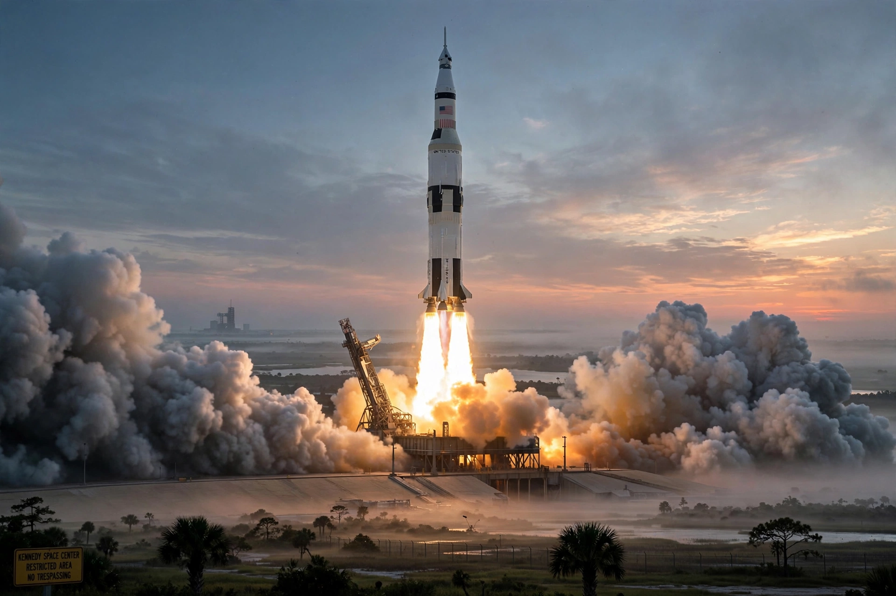

From Wikipedia, the free encyclopedia
| Space Race | |
|---|---|
| Rivals | United States and Soviet Union |
| Period | c. 1955–1975 |
| Milestones | Sputnik (1957), Gagarin (1961), Apollo 11 (1969) |

The Space Race was the 20th-century competition between the United States and the Soviet Union for supremacy in spaceflight, a defining arena of the Cold War (which also produced the NATO alliance). The USSR struck first with Sputnik 1 (1957) and Yuri Gagarin's first human spaceflight (1961).
President Kennedy's 1961 pledge to land a man on the Moon before the decade's end drove the Apollo program to its triumph in 1969 (see Moon landing). The race thawed into cooperation with Apollo–Soyuz (1975) and, later, the International Space Station; today's missions like Europa Clipper and Webb are its scientific heirs.